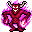
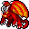

ゲヘナ Gehenna
英語版 CrawlWiki の記事「Gehenna」(0.33 向け、2025-06-05 版)の翻訳です。原文の著者は編集履歴をご覧ください。
この記事は 0.33 の時点の内容で、最新の 0.34 とは違うところがあるかもしれません。
| ゲヘナは溶岩と炎と劫罰の領域だ。長居する者には、火と硫黄が降り注ぐ。
刺激臭のある煙で、巻物が読めなくなる。 ゲヘナは7階層の深さがあり、黒曜石のルーンが眠っている。地獄の入り口から入れる。 |
| ゲヘナへの門。熱気が伝わってくる。ゲヘナは炎と溶岩と地獄の業火だけでできているようだ。 |
 ゲヘナは地獄のうち炎をつかさどる分岐で、地獄の入り口から入れる。
ゲヘナは地獄のうち炎をつかさどる分岐で、地獄の入り口から入れる。
住人
地獄に共通のモンスター
| 2  ヘリオン |
2 |
L |
L |

この分岐だけのモンスター
| h |
C |
N |
2 |
n |
| L |
* |
Y |
1  硫黄の魔神 |
O |

主
| & |
基本情報
ゲヘナは7階層の深さがあり、炎にちなんだモンスターが棲んでいる。ヘリオン、バルログ、硫黄の魔神、それに群れをなす地獄の豚に出くわすだろう。死ぬときに炎の嵐を放つ這い寄る業火と、それを生み出す火夫には気をつけよう。灼熱の哀れなるものは、苦労して手に入れた火炎耐性まで剥ぎ取ってくる。そのあいだもずっと、(ほかの地獄の分岐と同じく)地獄の神秘の力があなたを襲い、さまざまな厄介な効果を引き起こす。
ゲヘナの地形は洞窟のような空間に小さな丸い部屋が点在し、周りを溶岩の流れが囲んでいるというものだ。ほかの地獄と同じく、1〜6階はとても狭い。出口が1つ、下り階段が1つあるだけで、広さはふつうの階の4分の1ほどしかない。
ゲヘナの最下層には黒曜石のゾットのルーンがあり、アスモデウスが守っている。
地獄の効果
どの地獄にも共通する地獄の神秘の力に加えて、ゲヘナでは中にいるあいだ煙のせいで巻物がいっさい読めない。
攻略の助言
十分な火炎耐性(最低でも rF+)があり、出会う火炎耐性持ちのモンスターを倒す手段もあるなら、ゲヘナの1〜6階は(地獄にしては)それほど難しくないはずだ。氷の魔術や地の魔術があれば、旅はずっと楽になる。
ゲヘナ:7 は溶岩の堀に囲まれた要塞で、アスモデウスの居室の中で一度に敵を起こしすぎると悲惨なことになりかねない。硫黄の魔神に拷問を浴びせられたうえ、何体ものヘリオンに劫罰を呼び下ろされたら、強いキャラクターでもあっという間に終わりかねない。慎重に進もう。アスモデウス本人も手ごわい相手で、言ってみればセレボブを弱くしたような存在だ。溶岩の池をすばやく越えるには、飛行や転位術が役に立つだろう。
こぼれ話
ゲヘナという言葉は、エルサレムにあるヒンノムの谷と呼ばれる土地の名に由来する。聖書のいくつかの箇所によれば、この地はもともと、モレクをはじめとするさまざまなバアルの信奉者たちが、子どもを火で生贄に捧げた場所だった。のちにこの谷はエルサレムのあらゆる廃棄物が集まるごみ捨て場になった。動物や人間の死体や灰、くずやごみがここに投げ込まれ、言い伝えでは絶えず燃え続ける火に焼き尽くされたという。やがてこの地は呪われた場所とみなされ、ユダヤの民間伝承では滅びの場所の象徴になった。新約聖書や初期キリスト教の文書では、悪人が復活ののちに罰を受け、あるいは滅ぼされる最後の場所としてゲヘナが挙げられている。
変更履歴
| 分岐の一覧 |
|---|
| |
| 関連項目: ポータル |